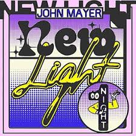

New light
John Mayer


 "New Light" is a song co-written and recorded by American singer-songwriter John Mayer. The song premiered on May 10, 2018[2] and was released to Hot AC[3] and Triple A radio[4] on June 18, 2018. It was written and produced by Mayer and No I.D..
"New Light" is a song co-written and recorded by American singer-songwriter John Mayer. The song premiered on May 10, 2018[2] and was released to Hot AC[3] and Triple A radio[4] on June 18, 2018. It was written and produced by Mayer and No I.D..
- New light